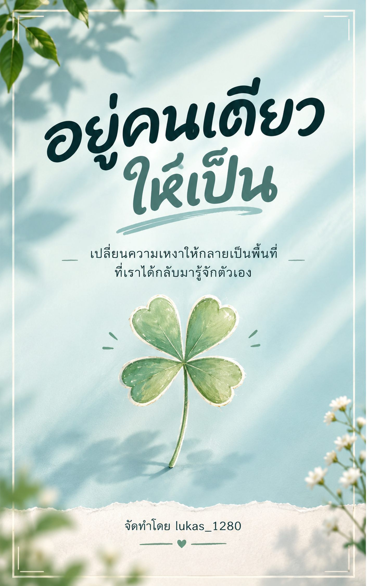

เปลี่ยนความเหงาให้กลายเป็นพื้นที่ที่เราได้กลับมารู้จักตัวเอง
หน้า 1 / 22

ใช้ปุ่มลูกศร ← → หรือปัดซ้าย-ขวาเพื่อเปลี่ยนหน้าได้เลยครับ
❤️🔥 โดเนทสนับสนุนช่องผมเคยเป็นคนที่กลัวความเงียบมากๆ เวลาต้องอยู่คนเดียวจะรู้สึกอึดอัด เหมือนต้องรีบหาอะไรมาเติมเต็มเวลาว่างตลอด ไม่ว่าจะเปิดเพลง เล่นมือถือ หรือทักหาใครสักคน เพราะกลัวว่าถ้าปล่อยให้เงียบจริงๆ ความรู้สึกแย่ๆ ที่เก็บไว้จะโผล่ขึ้นมา จนวันหนึ่งผมเริ่มเข้าใจว่า "การอยู่คนเดียว" กับ "ความเหงา" มันคนละเรื่องกัน การอยู่คนเดียวให้เป็น ไม่ใช่การตัดขาดจากทุกคนรอบตัว แต่คือการกลับมาอยู่กับตัวเองได้ โดยไม่ต้องรู้สึกว่างเปล่า หรือต้องพึ่งพาใครตลอดเวลาเพื่อให้รู้สึกโอเค Ebook เล่มนี้ผมเลยตั้งใจเขียนขึ้นมาเพื่อแบ่งปันสิ่งที่ผมค่อยๆ เรียนรู้มา ไม่ได้มาสอนว่าต้อง "เก่งเรื่องอยู่คนเดียว" แบบไหนถึงจะถูก แต่อยากชวนมึงมานั่งอยู่กับความเงียบไปด้วยกันสักพัก อ่านไปทีละหน้า แล้วค่อยๆ รู้สึกว่า จริงๆ แล้วการอยู่คนเดียว มันก็โอเคนะ หวังว่า Ebook เล่มนี้จะเป็นเพื่อนในวันที่มึงต้องอยู่คนเดียว และทำให้รู้สึกว่าอยู่คนเดียวก็ไม่ได้น่ากลัวอย่างที่เคยคิดไว้ครับ แล้วเจอกันใน Ebook นะครับ.🤍